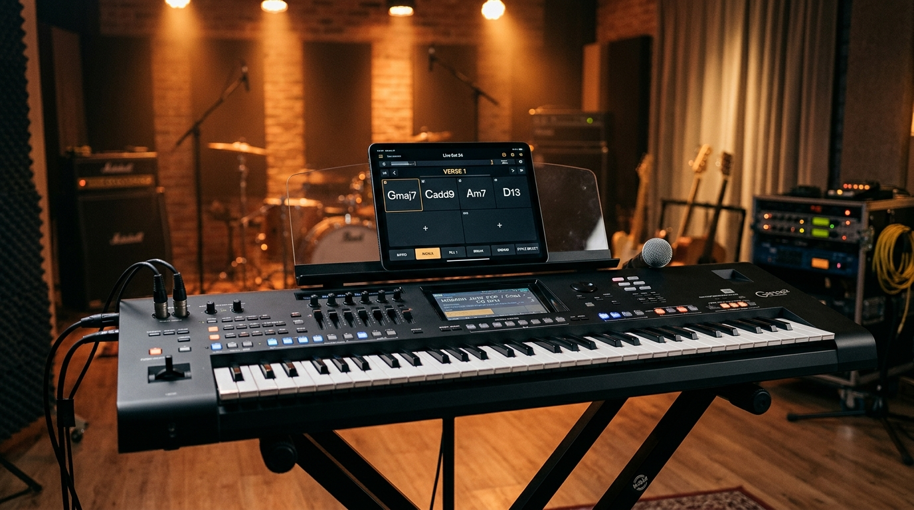

Your Yamaha Arranger.
Untethered & Elevated.
The tactile stage companion engineered for Yamaha PSR-SX & Genos workstation keyboards. Take direct command of styles, section transitions, voices, and chord charts via low-latency USB-MIDI — or control everything wirelessly from your iPad with Air Sync.

[USB TO HOST] Direct Link
Standard USB-B to USB-C/Lightning cable
Air Sync Hotspot Bridge
Peer-to-peer Wi-Fi with 4-digit code
Screen-Off Background Host
Persistent foreground service never drops
Private & Cloud Ready
100% offline stage mode + optional cloud preset sync
Leave your phone at the keyboard. Control from your iPad.
Traditional MIDI cables force you to stay inches from your instrument's front panel. Air Sync bridges your keyboard's USB port across a local phone hotspot to a tablet anywhere on stage.
No Venue Wi-Fi Needed
Simply turn on your phone's Personal Hotspot. Your iPad connects directly with a quick 4-digit PIN.
Rock-Solid Screen-Off Reliability
Native foreground service keeps the Wi-Fi radio and CPU awake even when your phone locks in your pocket.
Zero Cloud Delay
Direct peer-to-peer TCP stream with tcpNoDelay delivers immediate section transitions and chord detection.
Tactile Arranger Control
Experience the responsive hardware-inspired control panel. Click any section button below to trigger simulated arranger transitions and chord changes.
Everything you need on stage. Nothing you don't.
Designed from the ground up for keyboardists who perform live, lead worship, or play in touring bands with Yamaha arranger workstations.
Instant Arranger Control
Large, tactile touch targets for Main A–D variations, Intro, Ending, Break, and Auto Fill. Never fumble for small buttons on your keyboard during a fast chorus transition.
Real-Time Chord Detection
Plays in sync with your lower-manual chord fingerings. Instant real-time SysEx readout verifies current harmony, root notes, and chart chord symbols without latency.
Song Presets, Setlists & Cloud Sync
Recall complete song registrations with 1 tap. Pre-load your styles, voice splits, tempo, and key transpose for every track. Securely sync your library to your cloud account across your devices.
Voice & Style Catalog
Browse and search the entire factory voice and style library categorized by genre and instrument bank. Send Program Change and Bank Select messages instantly.
Stage-Tested High Contrast
Clean dark aesthetics engineered for dimly lit stages and bright daylight outdoor events. Clear typography and distinct LED indicators ensure zero squinting.
Private & Offline-First
Zero mandatory subscriptions. Run completely offline on stage over USB-MIDI, with optional cloud backup and full account & data deletion control.
Supported Instruments
SXG Companion utilizes standard Yamaha SysEx arranger specifications.
Yamaha PSR-SX700
Fully supported across all style sections, voice banks, and USB-MIDI SysEx commands.
- Direct [USB TO HOST]
- Arranger Sections A–D
- Intro / Ending / Fill / Break
- SysEx Tempo & Chord Readout
Yamaha PSR-SX900
Full support for arranger controls, chords, and multi-part voice selection.
- Direct [USB TO HOST]
- Complete Section Control
- Chord & Style Switching
- Air Sync Hotspot Bridging
Yamaha PSR-SX600
Compatible with core arranger section triggers and USB-MIDI chord reception.
- Standard USB-MIDI
- Main Arranger Sections
- Chord Tracking
Genos & Tyros Series
Compatible with standard Yamaha Arranger SysEx control protocol.
- Genos 1 / Genos 2
- Tyros 5
- Arranger SysEx Control
Frequently Asked Questions
Connect a standard USB cable (Type-B to USB-C or Lightning OTG adapter) directly between your phone and the [USB TO HOST] port on the back of your Yamaha keyboard. In SXG Companion, tap Connect Keyboard — no drivers are required.
Point blank: Absolutely not. It will never damage the keyboard, motherboard, or any electronic components.
Here is the exact technical reason why:
- 1. Zero Electrical or Hardware Impact MIDI over USB TO HOST is purely digital data communication operating within standard USB 5V logic. Software messages—no matter how many or how fast they are sent—cannot change voltages, draw extra current, or overheat chips, resistors, or the motherboard. The hardware USB controller on the keyboard's mainboard handles the electrical signaling in silicon according to strict USB specifications.
- 2. Built-in Buffer Protections The MIDI specification and arranger sound engines (such as Yamaha’s SWP series tone generators and CPUs across PSR-SX, Genos, Tyros, and PSR-S models) were designed specifically to handle continuous, high-density data (like rapid pitch bends, aftertouch, and dense 24-pulse-per-beat MIDI clocks). If an application ever sends data faster than the keyboard's input buffer can read, the worst that can ever happen is the keyboard silently drops the excess bytes or shows a temporary on-screen notice (MIDI Buffer Full). It clears as soon as the transmission stops—no damage done.
-
3. Registrations are Loaded into Volatile RAM, Not System ROM
When the app sends a registration or bank load command (such as a
.rgtfile), the keyboard firmware reads the file strictly into volatile RAM (temporary working memory, just like when you press a panel button). It does not touch or re-flash the motherboard’s system ROM or boot firmware, so there is zero risk of bricking or flash wear. - 4. This is How DAWs and Official Utilities Operate Professional DAWs like Cubase, Logic Pro, and Ableton, as well as manufacturer utility software, constantly stream thousands of MIDI events and SysEx dumps to these exact keyboards during live sets and studio recording. SXG Companion operates using the exact same standard MIDI protocols.
Whether you play a PSR-SX700, SX900, SX600, Genos, Tyros, or another compatible arranger—your keyboard is completely safe.
No! Air Sync works anywhere, even in outdoor venues or churches without Wi-Fi. Simply turn on the Personal Hotspot on your phone (Host). Then connect your iPad (Remote) to that hotspot and enter the 4-digit PIN displayed on the host. Internet is never needed.
No. SXG Companion includes a native Android Foreground Service holding high-performance Wi-Fi and Wake locks. The phone maintains the connection reliably in the background while locked in your pocket or next to the keyboard.
Yes. SXG Companion is currently available in open Alpha for testers via Google Play and Apple TestFlight. Feedback from keyboardists and live performers directly shapes development.
Both! All your presets, chord charts, and setlists are stored locally on your device for instant, zero-latency access during rehearsals and live performances. With our new cloud account support, you can also sign in to securely back up and synchronize your library across all your devices (Android, iPhone, iPad).
You have full control over your data. You can delete your account or specific data parts (such as cloud presets or setlists) directly within the app by going to Settings > Account > Delete Account. You can also submit a web request at our Account & Data Deletion Page, where you can select exactly which portions of your cloud data should be deleted.